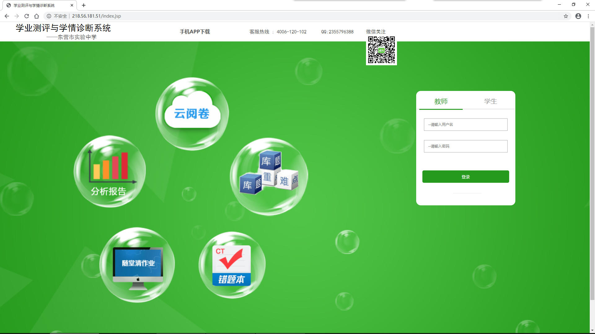
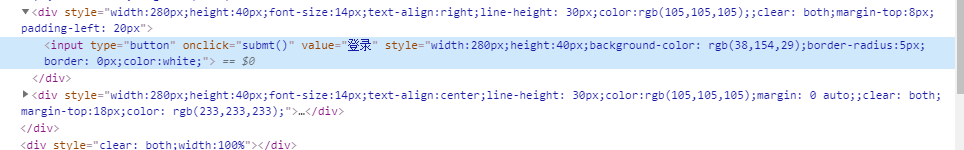
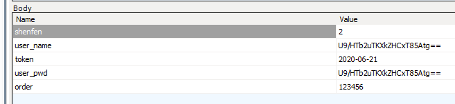
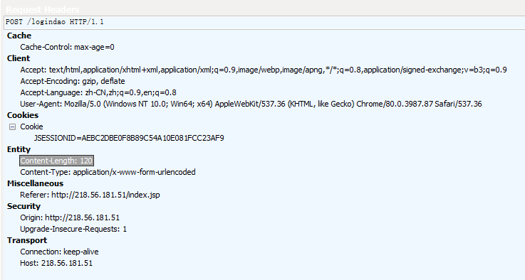

这里是关于正常登陆界面的研究
正常登陆界面如图所示

正常登陆页面有两个登陆入口
*关于登陆账号的问题本网站极度保密不会公布，假如有需要可以在Github发起提议
两个入口分别为关于老师登陆与学生登录的入口，代码如下

同时，登陆时发送的请求为Post，请求头Body部分如下

这里发送出了日期和用户名，但此时user_name和user_pwd是加密的，我们也不清楚是什么（内容一致，但是目前猜测为MD5）
完整请求头如下

但是这里要提到的是，此登录界面和Admin页面也为阴阳界面，分别为
http://218.56.181.51/index.jsp
其中前两个页面，即端口80和端口80下其他两个界面的最终判定都指向Logindao
所以假如希望枚举密码可以尝试发送Post命令到Logindao